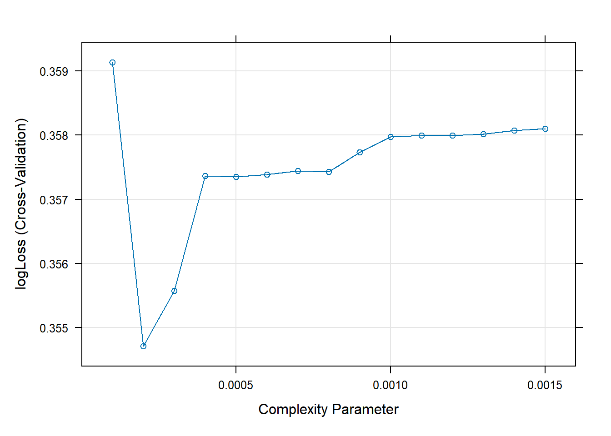

We’ll be looking at the relationship between diabetes occurrence and several health predictors given in this Diabetes Health Indicators Dataset. The data comes from the Behavioral Risk Factor Surveillance System, a telephone survey collected by the CDC. We’ll be using the 2015 version of the data for exploration, analysis, and machine learning.
The data contains information such as the occurrence of diabetes, various diet-related predictors (fruit/veggie consumption, alcohol), behavioral variables (exercise, smoker, doctor visits), demographic information (sex, education, income), and a few subjective variables where respondents are asked about their health.
We’ll keep all variables, but be focusing on health/disease history variables, diet variables, a few behavioral variables, sex, and health insurance.
The goal of this Modeling Exercise is to identify any variables that may be indicative of a higher probability of a respondent being diabetic or pre-diabetic. We’ve gotten an intuition of this through numerical summaries and visualizations. We’ll now test predictive relationships using statistical and machine learning models.
Ingesting data
We read in and clean up the data as done during the EDA phase.
library(readr)library(dplyr)
Attaching package: 'dplyr'
The following objects are masked from 'package:stats':
filter, lag
The following objects are masked from 'package:base':
intersect, setdiff, setequal, union
── Column specification ────────────────────────────────────────────────────────
Delimiter: ","
dbl (22): Diabetes_binary, HighBP, HighChol, CholCheck, BMI, Smoker, Stroke,...
ℹ Use `spec()` to retrieve the full column specification for this data.
ℹ Specify the column types or set `show_col_types = FALSE` to quiet this message.
# helper function to extract level code and level translationgetLevels <-function(x, value_name ="value") {# grabbing digits at beginning of string index <-str_extract(x, "^\\d{1,2}") |>as.integer()# Grabbing everything that starts with a letter onwards value <-str_extract(x, "[A-Za-z](.+)")# putting index and value into data frame for joining later res <-data.frame(index = index) res[[value_name]] <- value res}# factor levels to use for some vars, obtained from discussion section using readClipboard()ages <-c("1 Age 18 to 24", "2 Age 25 to 29", "3 Age 30 to 34", "4 Age 35 to 39", "5 Age 40 to 44", "6 Age 45 to 49", "7 Age 50 to 54", "8 Age 55 to 59", "9 Age 60 to 64", "10 Age 65 to 69", "11 Age 70 to 74", "12 Age 75 to 79", "13 Age 80 or older")edu <-c("1 Never attended school or only kindergarten", "2 Grades 1 through 8 (Elementary)", "3 Grades 9 through 11 (Some high school)", "4 Grade 12 or GED (High school graduate)", "5 College 1 year to 3 years (Some college or technical school)", "6 College 4 years or more (College graduate)")income <-c("1 Less than $10,000", "2 Less than $15,000 ($10,000 to less than $15,000)", "3 Less than $20,000 ($15,000 to less than $20,000)", "4 Less than $25,000 ($20,000 to less than $25,000)", "5 Less than $35,000 ($25,000 to less than $35,000)", "6 Less than $50,000 ($35,000 to less than $50,000)", "7 Less than $75,000 ($50,000 to less than $75,000)", "8 More than $75,000")gen_health <-c("1 excellent", "2 very good", "3 good", "4 fair", "5 poor")# reference tablesage_table <-getLevels(ages, "age_levels")edu_table <-getLevels(edu, "edu_levels")income_table <-getLevels(income, "inc_levels")gen_health_table <-getLevels(gen_health, "health_levels")# Grabbing diabetes data, joining translated categorical variables, and dropping redundant default variablesdiabetes2015 <- diabetes2015 |>left_join(age_table, by =join_by(Age == index)) |>left_join(edu_table, by =join_by(Education == index)) |>left_join(income_table, by =join_by(Income == index)) |>left_join(gen_health_table, by =join_by(GenHlth == index)) |>select(-Age, -Education, -Income, -GenHlth) |># dropping baseline variablesmutate(Diabetes_binary =ifelse(Diabetes_binary ==1, "yes", "no")) |>mutate(across(where(is.character), factor)) # making the relevant variables factors
Train/Test split
Next, we’ll split the data into a training and test set. We’ll be doing a 70/30 split for the training/test set, and we’ll do 5-fold cross validation.
We’ll be using logLoss as our metric for model evaluation, which should be minimized.
Log loss is a measure of the performance of a classification model. A perfect model has a log loss of 0. Compared with accuracy(), log loss takes into account the uncertainty in the prediction and gives a more detailed view into the actual performance. For example, given two input probabilities of .6 and .9 where both are classified as predicting a positive value, say, “Yes”, the accuracy metric would interpret them as having the same value. If the true output is “Yes”, log loss penalizes .6 because it is “less sure” of it’s result compared to the probability of .9.
So essentially, when we have a binary response variable, we may prefer log loss to something like accuracy because it will penalize “unsure” probability predictions. This gives us more insight into how well a model is predicting instead of just giving us a “positive/”negative” class. This becomes especially important when our classes are imbalanced in a binary outcome response, as predicting the minority class gets more difficult.
library(caret)
Warning: package 'caret' was built under R version 4.4.1
Loading required package: ggplot2
Loading required package: lattice
set.seed(123)train_split <-createDataPartition(diabetes2015$Diabetes_binary, p =0.7, list =FALSE)train_set <- diabetes2015[train_split, ]test_set <- diabetes2015[-train_split, ]# 5 fold cross validation and log loss for train controlcontrol <-trainControl(method="cv", number=5, classProbs=TRUE, summaryFunction=mnLogLoss)
We’ll now begin considering different model classes and fitting models to determine which one will perform best on the test set.
Model fitting
We’ll be considering three different classes of models:
Logistic regression
Classification trees
Random forests
We begin with logistic regression.
Logistic regression
Logistic regression is a generalized linear model that relates a binary response to a linear function of predictors. This relation happens through a link function. For logistic regression, we’ll typically be using the logit function, though other options exist.
We would apply a logistic regression to a binary response because, while we could use ordinary least squares on a 0/1 outcome, the nature of that model would mean we may predict probabilities less than 0 or greater than 1, which wouldn’t be appropriate – linear regression assumes the outcome’s support is all real numbers. Logistic regression restricts the probability predictions to be between 0 and 1. However, we must be careful because we no longer interpret logistic regression coefficients the way we would for linear regression. By default, we interpret them in terms of log-odds.
Let’s fit some logistic regression models. We’ll have three sets of variables: objective health data as inputs (stuff that a doctor would provide), subjective data as inputs (stuff from questionnaires plus demographics), and all data.
We’ll visually compare performance across resamples.
After training all three of our candidate models, the model using all the predictors minimizes log loss. However, the difference between the best logistic regression model and the simplest logistic regression model isn’t too big… so we’ll use the full model and the simplest model captured by health_data on the test set and see what the difference is.
For curiousity’s sake, let’s look at a summary of that best logistic regression model, and the simplest model.
# simplest modelsummary(logreg1)
Call:
NULL
Coefficients:
Estimate Std. Error z value Pr(>|z|)
(Intercept) -4.802712 0.033616 -142.87 <2e-16 ***
HighBP 1.067853 0.016874 63.28 <2e-16 ***
HighChol 0.705505 0.015789 44.68 <2e-16 ***
BMI 0.058623 0.001014 57.80 <2e-16 ***
Stroke 0.337095 0.029829 11.30 <2e-16 ***
HeartDiseaseorAttack 0.580964 0.020494 28.35 <2e-16 ***
DiffWalk 0.684355 0.016986 40.29 <2e-16 ***
---
Signif. codes: 0 '***' 0.001 '**' 0.01 '*' 0.05 '.' 0.1 ' ' 1
(Dispersion parameter for binomial family taken to be 1)
Null deviance: 143396 on 177576 degrees of freedom
Residual deviance: 120795 on 177570 degrees of freedom
AIC: 120809
Number of Fisher Scoring iterations: 5
# full modelsummary(logreg3)
Call:
NULL
Coefficients:
Estimate
(Intercept) -8.217491
HighBP 0.693213
HighChol 0.525835
CholCheck 1.261563
BMI 0.059036
Smoker -0.039468
Stroke 0.152456
HeartDiseaseorAttack 0.241201
PhysActivity -0.059418
Fruits -0.008333
Veggies -0.028423
HvyAlcoholConsump -0.761624
AnyHealthcare 0.087593
NoDocbcCost -0.007637
MentHlth -0.003463
PhysHlth -0.003196
DiffWalk 0.151527
Sex 0.266505
`age_levelsAge 25 to 29` 0.118075
`age_levelsAge 30 to 34` 0.422357
`age_levelsAge 35 to 39` 0.839950
`age_levelsAge 40 to 44` 1.081653
`age_levelsAge 45 to 49` 1.313777
`age_levelsAge 50 to 54` 1.557893
`age_levelsAge 55 to 59` 1.610480
`age_levelsAge 60 to 64` 1.841716
`age_levelsAge 65 to 69` 2.007648
`age_levelsAge 70 to 74` 2.055305
`age_levelsAge 75 to 79` 1.974004
`age_levelsAge 80 or older` 1.797678
`edu_levelsCollege 4 years or more (College graduate)` -0.090230
`edu_levelsGrade 12 or GED (High school graduate)` -0.036568
`edu_levelsGrades 1 through 8 (Elementary)` 0.142040
`edu_levelsGrades 9 through 11 (Some high school)` -0.001561
`edu_levelsNever attended school or only kindergarten` 0.137789
`inc_levelsLess than $15,000 ($10,000 to less than $15,000)` -0.022839
`inc_levelsLess than $20,000 ($15,000 to less than $20,000)` -0.044046
`inc_levelsLess than $25,000 ($20,000 to less than $25,000)` -0.093504
`inc_levelsLess than $35,000 ($25,000 to less than $35,000)` -0.147777
`inc_levelsLess than $50,000 ($35,000 to less than $50,000)` -0.236534
`inc_levelsLess than $75,000 ($50,000 to less than $75,000)` -0.261493
`inc_levelsMore than $75,000` -0.395796
health_levelsfair 1.821581
health_levelsgood 1.394845
health_levelspoor 1.970615
`health_levelsvery good` 0.714836
Std. Error z value
(Intercept) 0.174246 -47.160
HighBP 0.017618 39.346
HighChol 0.016246 32.366
CholCheck 0.082915 15.215
BMI 0.001100 53.645
Smoker 0.015878 -2.486
Stroke 0.030031 5.077
HeartDiseaseorAttack 0.021263 11.344
PhysActivity 0.017247 -3.445
Fruits 0.016405 -0.508
Veggies 0.019053 -1.492
HvyAlcoholConsump 0.045809 -16.626
AnyHealthcare 0.040517 2.162
NoDocbcCost 0.027657 -0.276
MentHlth 0.001022 -3.390
PhysHlth 0.000961 -3.326
DiffWalk 0.020289 7.468
Sex 0.016110 16.543
`age_levelsAge 25 to 29` 0.173114 0.682
`age_levelsAge 30 to 34` 0.154799 2.728
`age_levelsAge 35 to 39` 0.146866 5.719
`age_levelsAge 40 to 44` 0.143526 7.536
`age_levelsAge 45 to 49` 0.141301 9.298
`age_levelsAge 50 to 54` 0.139865 11.139
`age_levelsAge 55 to 59` 0.139443 11.549
`age_levelsAge 60 to 64` 0.139154 13.235
`age_levelsAge 65 to 69` 0.139169 14.426
`age_levelsAge 70 to 74` 0.139654 14.717
`age_levelsAge 75 to 79` 0.140456 14.054
`age_levelsAge 80 or older` 0.140670 12.779
`edu_levelsCollege 4 years or more (College graduate)` 0.020413 -4.420
`edu_levelsGrade 12 or GED (High school graduate)` 0.020070 -1.822
`edu_levelsGrades 1 through 8 (Elementary)` 0.049895 2.847
`edu_levelsGrades 9 through 11 (Some high school)` 0.036107 -0.043
`edu_levelsNever attended school or only kindergarten` 0.235537 0.585
`inc_levelsLess than $15,000 ($10,000 to less than $15,000)` 0.042470 -0.538
`inc_levelsLess than $20,000 ($15,000 to less than $20,000)` 0.040925 -1.076
`inc_levelsLess than $25,000 ($20,000 to less than $25,000)` 0.040204 -2.326
`inc_levelsLess than $35,000 ($25,000 to less than $35,000)` 0.039605 -3.731
`inc_levelsLess than $50,000 ($35,000 to less than $50,000)` 0.039087 -6.051
`inc_levelsLess than $75,000 ($50,000 to less than $75,000)` 0.039510 -6.618
`inc_levelsMore than $75,000` 0.039193 -10.099
health_levelsfair 0.042083 43.286
health_levelsgood 0.038809 35.941
health_levelspoor 0.050397 39.102
`health_levelsvery good` 0.039650 18.029
Pr(>|z|)
(Intercept) < 2e-16 ***
HighBP < 2e-16 ***
HighChol < 2e-16 ***
CholCheck < 2e-16 ***
BMI < 2e-16 ***
Smoker 0.012929 *
Stroke 3.84e-07 ***
HeartDiseaseorAttack < 2e-16 ***
PhysActivity 0.000571 ***
Fruits 0.611487
Veggies 0.135754
HvyAlcoholConsump < 2e-16 ***
AnyHealthcare 0.030628 *
NoDocbcCost 0.782435
MentHlth 0.000700 ***
PhysHlth 0.000883 ***
DiffWalk 8.12e-14 ***
Sex < 2e-16 ***
`age_levelsAge 25 to 29` 0.495198
`age_levelsAge 30 to 34` 0.006364 **
`age_levelsAge 35 to 39` 1.07e-08 ***
`age_levelsAge 40 to 44` 4.84e-14 ***
`age_levelsAge 45 to 49` < 2e-16 ***
`age_levelsAge 50 to 54` < 2e-16 ***
`age_levelsAge 55 to 59` < 2e-16 ***
`age_levelsAge 60 to 64` < 2e-16 ***
`age_levelsAge 65 to 69` < 2e-16 ***
`age_levelsAge 70 to 74` < 2e-16 ***
`age_levelsAge 75 to 79` < 2e-16 ***
`age_levelsAge 80 or older` < 2e-16 ***
`edu_levelsCollege 4 years or more (College graduate)` 9.86e-06 ***
`edu_levelsGrade 12 or GED (High school graduate)` 0.068451 .
`edu_levelsGrades 1 through 8 (Elementary)` 0.004417 **
`edu_levelsGrades 9 through 11 (Some high school)` 0.965520
`edu_levelsNever attended school or only kindergarten` 0.558547
`inc_levelsLess than $15,000 ($10,000 to less than $15,000)` 0.590735
`inc_levelsLess than $20,000 ($15,000 to less than $20,000)` 0.281807
`inc_levelsLess than $25,000 ($20,000 to less than $25,000)` 0.020032 *
`inc_levelsLess than $35,000 ($25,000 to less than $35,000)` 0.000191 ***
`inc_levelsLess than $50,000 ($35,000 to less than $50,000)` 1.44e-09 ***
`inc_levelsLess than $75,000 ($50,000 to less than $75,000)` 3.63e-11 ***
`inc_levelsMore than $75,000` < 2e-16 ***
health_levelsfair < 2e-16 ***
health_levelsgood < 2e-16 ***
health_levelspoor < 2e-16 ***
`health_levelsvery good` < 2e-16 ***
---
Signif. codes: 0 '***' 0.001 '**' 0.01 '*' 0.05 '.' 0.1 ' ' 1
(Dispersion parameter for binomial family taken to be 1)
Null deviance: 143396 on 177576 degrees of freedom
Residual deviance: 112982 on 177531 degrees of freedom
AIC: 113074
Number of Fisher Scoring iterations: 6
Pretty interesting.
Now we’ll look at classification trees.
Classification trees
Classification trees are non-parametric models that make predictions by partitioning the predictor space such that some loss function of interest is minimized. Predictions for the partitions, in the classification case, are simply the most prevalent class (or the proportion of that most prevalent class, if we’re predicting probabilities) within that partition. Classification trees can easily overfit data, so we adjust their performance by tuning a complexity parameter cp for these models.
We might use classification trees when we are unsure of what variables have useful relationships with the response or when we are unsure of the exact nature of the relationship, when we are unsure of any interaction effects, and when we are interested in feature selection while still maintaining a degree of interpretability. This is only applicable with smaller predictor sets however. Also, classification tree results can be highly variable with small changes in the data, so this is another consideration we must take.
Let’s fit some trees! We’ll plot the logLoss value per value of cp, the complexity parameter to get an idea of which tree does best. We won’t be visualizing a tree diagram though, as with all the variables we have, it’ll be pretty difficult to interpret.
tree_grid <-data.frame(cp =seq(from =0.0001, to =0.0015, by =0.0001))set.seed(456)rpart_fit <-train(Diabetes_binary ~ ., data = train_set,trControl = control, method ="rpart", metric ="logLoss",tuneGrid = tree_grid)plot(rpart_fit)

We see our estimate of best rpart model is at a cp value of 2^{-4}.
Finally, we’ll look at random forest models, which are ensembles of individual tree models.
Random forest
PLEASE NOTE: Given the size of the data, instead of method = 'rf', we’ll be using method = 'ranger' to use the ranger package’s implementation of the random forest algorithm. It’s much faster, and while going through this assignment, it took about 20 minutes to finish 3-fold CV over 500 trees, 3 values of mtry, and 2 values of splitrule. A prior approach on rf took about 2 hours for 5 values of mtry and 5-fold CV on 300 trees.
Random forest models are ensemble models. This means they use many submodels to make “averaged” predictions. The benefit here is that the prediction accuracy is typically improved by virtue of reduced variance of individual tree predictions, since predictions are aggregated from several trees.
Random forests take a bootstrapped sample, the same size as the actual sample, and train a tree on this resample. Then this tree calls predictions for some given x-values. This process is repeated a set number of times, typically 100 or 1000. Finally, those 100 or 1000 sets of predictions are averaged. This is the bagged tree approach.
The extra step random forests add is random sampling of the predictors to decorrelate the trees. This makes it so that correlated predictors don’t dominate the predictor space.
We’ll train some random forest models and select the best one based on the best mtry parameter. The ranger implementation of random forest, by default, uses 500 trees. We’ll use all predictors as initial inputs. Due to the length of time it takes to train a random forest model, we’ll be reducing the number of cross-validation folds to 3, and let the caret’s train function randomly select hyperparameter values to tune over.
# 3 fold cross validation and log loss for train controlrf_control <-trainControl(method="cv", number=3, classProbs=TRUE, summaryFunction=mnLogLoss)set.seed(456)rf_fit <-train(Diabetes_binary ~ ., data = train_set,trControl = rf_control, method ="ranger", metric ="logLoss",tuneLength =3# tuneGrid = tree_grid )
We see from the plot of hyperparameter value relationships on CV logLoss that fewer predictors and a gini split-rule yield the best RF model from the ranger package.
Time to evaluate performance on the test set!
Test set evaluation
We’ll create test set predictions for the full-variable logistic regression model, for the simplest logistic regression model, for the best classification tree model, and for the best random forest model. Then we’ll determine which model performs best overall, but note that we’ll select the simplest model if there isn’t much difference in performance between the best and second best model.
We’ll create a helper function getLogLoss to evaluate model performance on the test set, then stick the results in a data frame and see which model gets the lowest test set log loss.
getLogLoss <-function(model_fit, newdata) {# predict classes class_preds <-predict(model_fit, newdata = newdata) classes <-levels(class_preds)# predict probabilities prob_preds <-predict(model_fit, newdata = newdata, type ="prob")# put data in data frame with required columns for mnLogLoss function preds_df <-data.frame(obs = newdata$Diabetes_binary, pred = class_preds) |>bind_cols(prob_preds)# get log lossmnLogLoss(preds_df, lev = classes)}model_performance <-data.frame(models =c("full logistic regression", "simplest logistic regression", "class. tree", "random forest"),test_log_loss =c(getLogLoss(logreg3, test_set), getLogLoss(logreg1, test_set), getLogLoss(rpart_fit, test_set), getLogLoss(rf_fit, test_set)) )# Viewing model results by lowest log lossmodel_performance |>arrange(test_log_loss)
models test_log_loss
1 full logistic regression 0.3143462
2 random forest 0.3276786
3 simplest logistic regression 0.3369585
4 class. tree 0.3556284
We see the best model, evaluated on the test set, is full logistic regression!
The differences between the models aren’t huge, though, and we prefer simplicity, so going forward, we’ll choose the simplest logistic regression model for our API. Please note that if we absolutely had to get the most accurate model, we’d likely devote more time to hyperparameter tuning on random forest, or we’d take the full logistic regression model.
Modeling conclusion
We trained 3 logistic regression models with different predictor sets, a few classification trees, and a few random forest models using cross validation. Then we evaluated their performance on the test set. We found full logistic regression performs best.
But as we saw, the differences in test set performance aren’t massive, and we prefer parsimony in our modeling, so we’ll use the simplest logistic regression for our API.